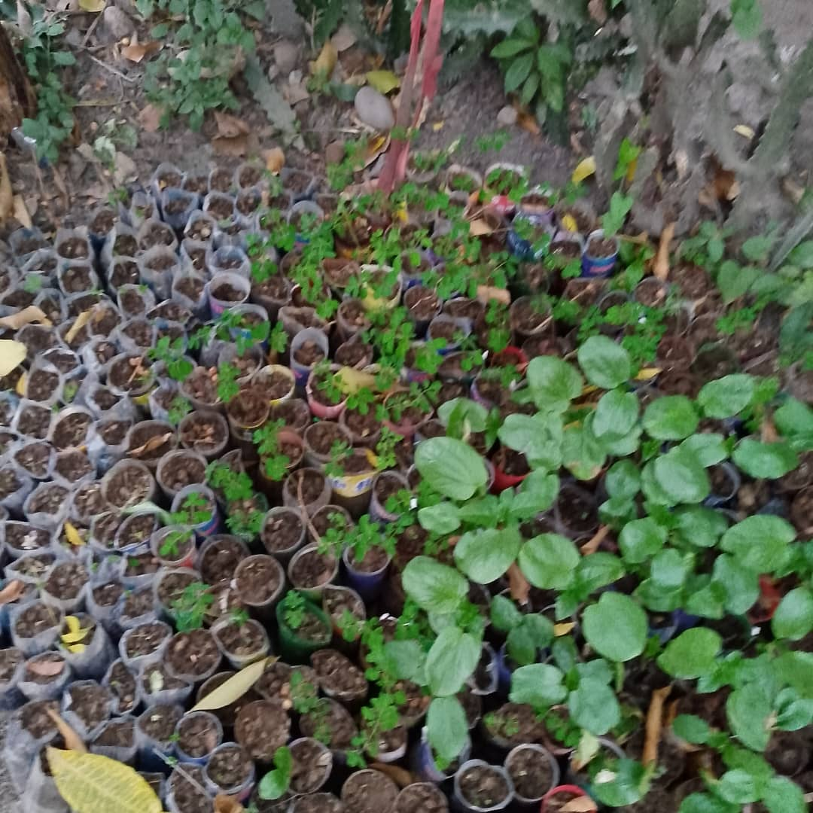

The cooperative that creates work and makes the land thrive. By and for Haitians, since 2011.
KONKRET means concrete. Not a project, not a promise... an answer. The youth-employment cooperative of SAKALA in the North of Haiti, born in 2011 in Dubre, Milot.
We bet on the land, on training, and on cooperation to create jobs that last. Faced with the limits of outside aid, we chose a model rooted in local resources, led by Haitians for Haitians.
Because every action is KONKRÈT, and because together we can sow hope and harvest a new Haiti.
Founding philosophy, KONKRET, 2011
The difference between an aid program and a cooperative is ownership. Here, the land, the tools, and the harvests belong to the people who bring them to life. We don't hand out crumbs... we build a shared inheritance.
The productive resources belong to the cooperative. A community share, in allocated gold, is assigned to members and grows in value over time.
Steady income that beats the street, weighted by certification. A job isn't a promise, it's the starting point.
Technical skills, cooperative management, and personal growth. We train whole citizens, not just workers.
From its birthplace in Dubre, Milot, KONKRET has grown to Trou-du-Nord and Limonade. A cooperative network that proves the model can be repeated, and that the land of the North can feed and employ. See the programs.
Joining in is simple.